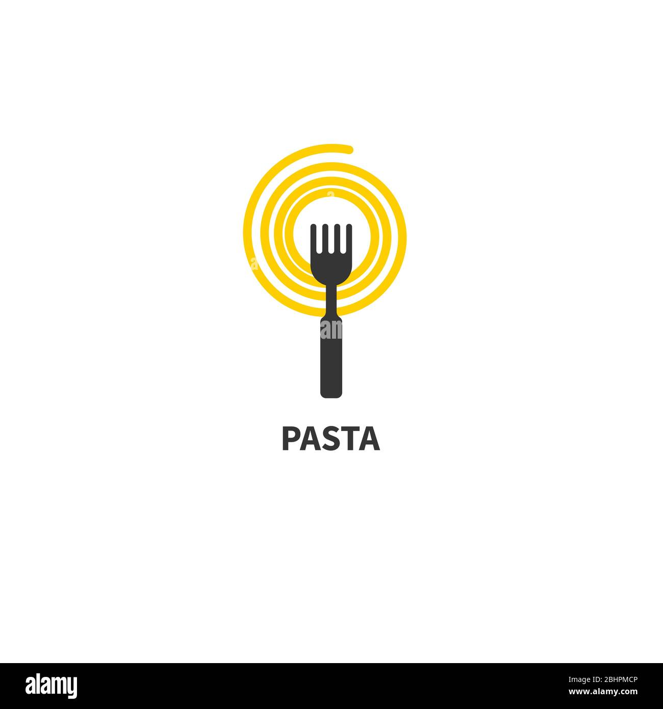
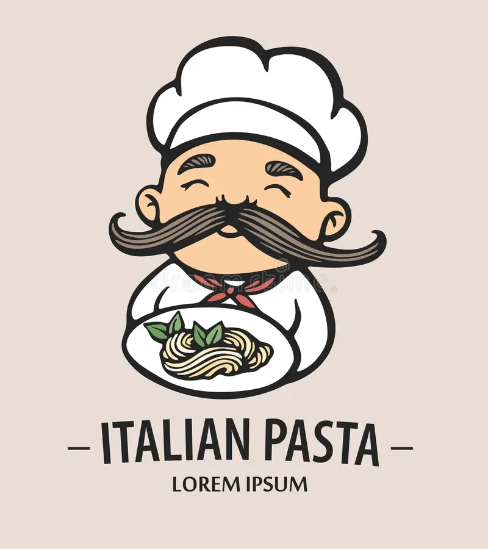

Lets Eat!!
Pasta

Pasta
Liked by YourMom, html5, web and 100,000 others
If you dont have a KitchenAid, dont worry! You could also roll out this pasta dough according to the instructions on a regular pasta maker. However you make it, I hope you try this recipe. Its an easy, fun way to spend an hour in the kitchen with someone you love, and at the end, you get to eat a big plate of chewy noodles with a perfect al dente bite!
If you dont have a KitchenAid, dont worry! You could also roll out this pasta dough according to the instructions on a regular pasta maker. However you make it, I hope you try this recipe. Its an easy, fun way to spend an hour in the kitchen with someone you love, and at the end, you get to eat a big plate of chewy noodles with a perfect al dente bite!